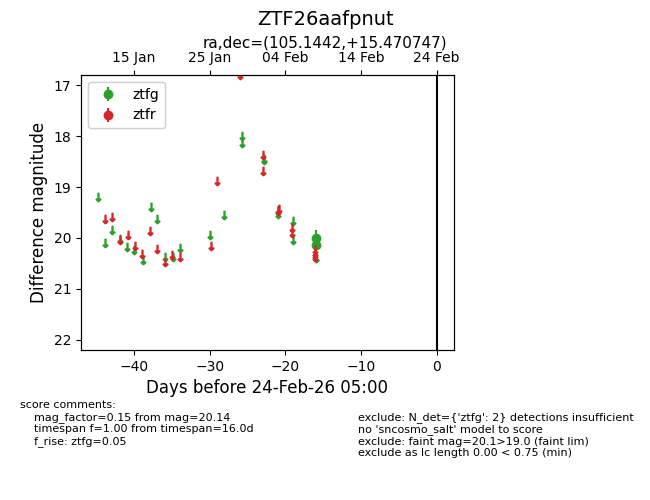
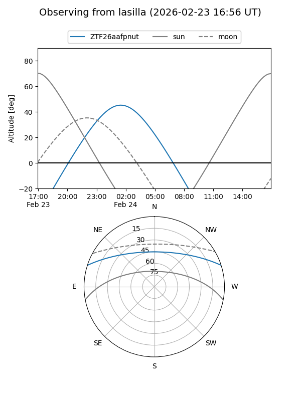
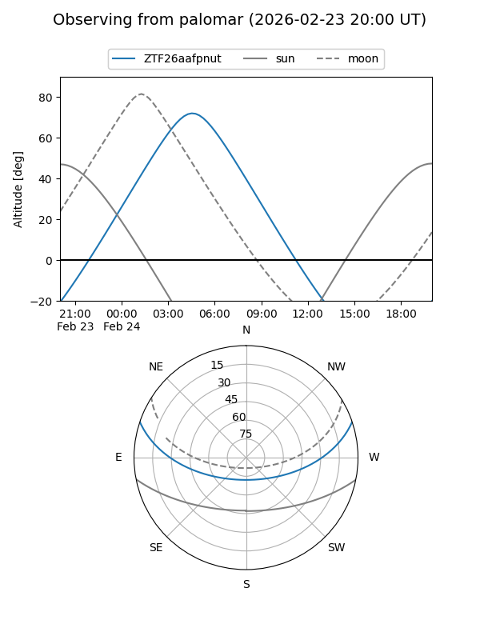

ZTF26aafpnut
Target ZTF26aafpnut at 2026-02-24 09:08
Aliases and brokers:
FINK: link
Lasair: link
ALeRCE: link
alt names
ZTF26aafpnut (ztf,fink_ztf)
Coordinates:
equatorial (ra, dec) = 105.1442,+15.47075
equatorial (HMS+DMS) = 07:00:34.60,+15:28:14.69
galactic (l, b) = (200.0701,+8.96468)
Flags:
Photometry:
last ztfg=20.14
2 ztfg detections
Lightcurve

Visibility


Additional plots